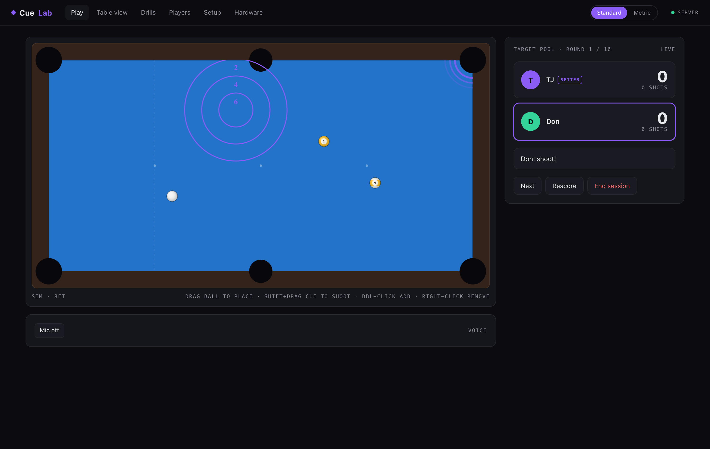
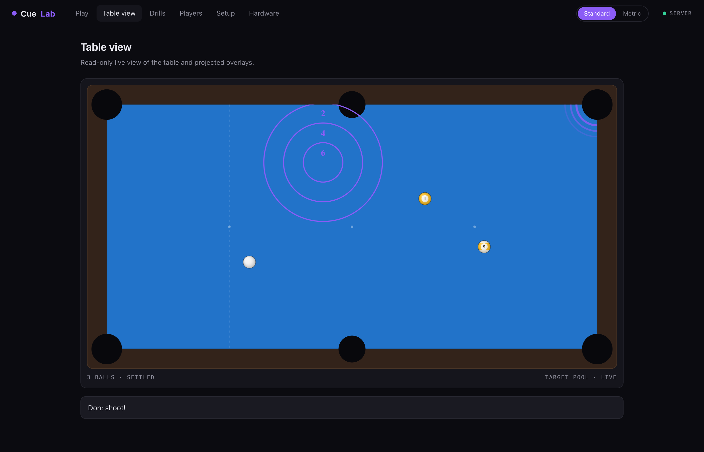
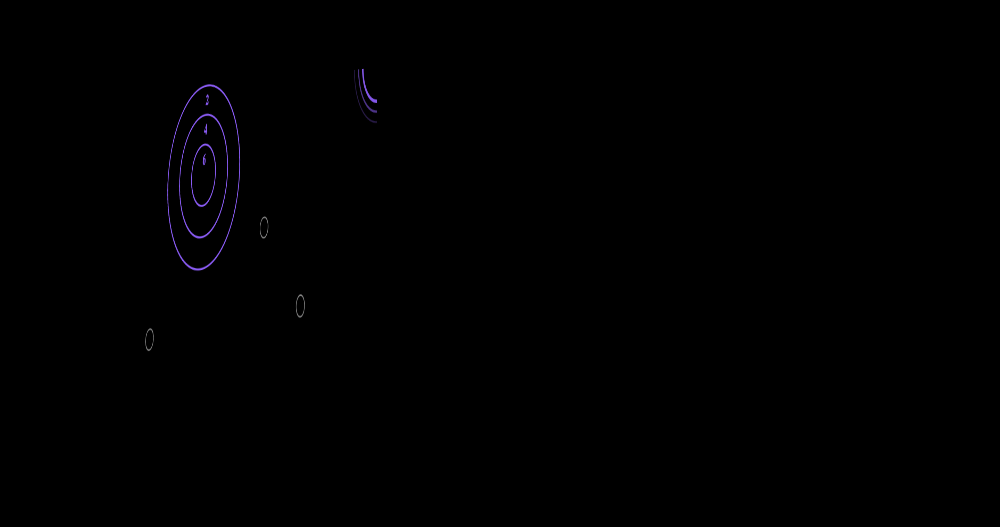
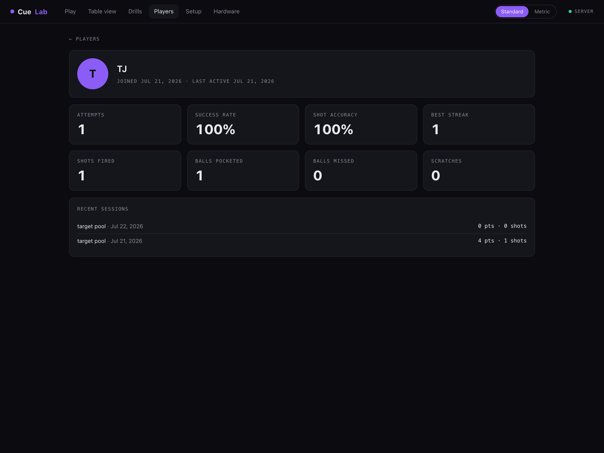
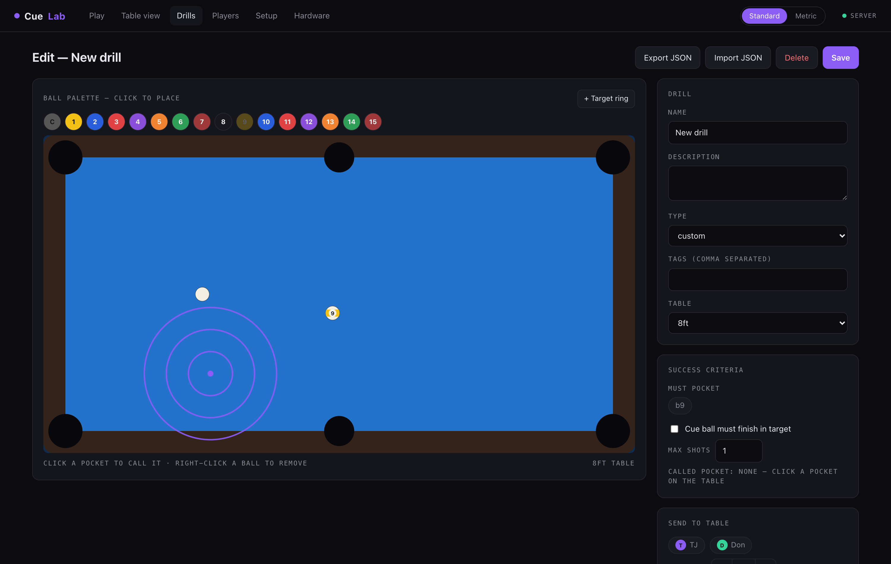
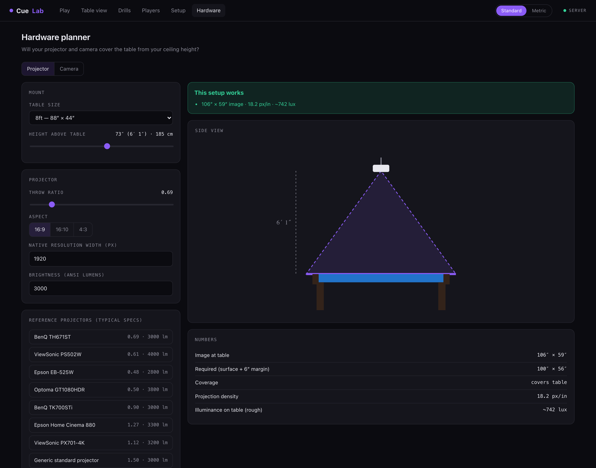

CueLab projects games and drills straight onto your cloth, watches every ball with an overhead camera, and scores each shot the moment it settles. It runs on a Mac mini and never needs the internet.

A short-throw projector points straight down at the cloth. A cheap webcam sits beside it. The software closes the loop between what you see and what you shot.
Target rings, ghost-ball positions, called pockets, and countdowns render on the table itself. Black projects as nothing, so the surface stays clean except for the lines that matter.
An overhead camera finds every ball 30 times a second and maps it to real table coordinates. Calibration takes about ten minutes and holds until someone moves the mount.
CueLab detects the shot, the pocket, the scratch, and where the cue ball came to rest. Nobody keeps score on a napkin and nobody argues about the ring.
Each round, one player sets the table and calls a pocket. A bullseye drops somewhere random. Everyone shoots the same layout.

Rings, ghosts, and the called-pocket glow on pure black. On the cloth it reads like the table is drawing on itself.

Attempts, success rate, best streak, balls pocketed, scratches. Each session lands in a per-player dashboard you can put on the wall TV.

Drag balls into position, drop target rings, call a pocket, set the success rule. Save it, export it as a file, hand it to a friend.

The planner takes your ceiling height and table size and tells you whether a given projector and camera will work before you spend a dollar. Verdicts come with exact shortfalls in inches.

CueLab ships with a full physics simulator and a synthetic camera, so every game, drill, and even the calibration flow works on a laptop with zero hardware. Buy the projector after you're hooked.
See the gamesTarget Pool, 9-ball scoring, drill editor, stats, calibration, voice control, recording, hardware planner, simulator.
A small neural detector for rough lighting and busy tables, running on the Mac's Neural Engine. The classical tracker works now on an evenly lit table.
Publish drills, pull down other people's, and shoot the same layout against a friend in another city.